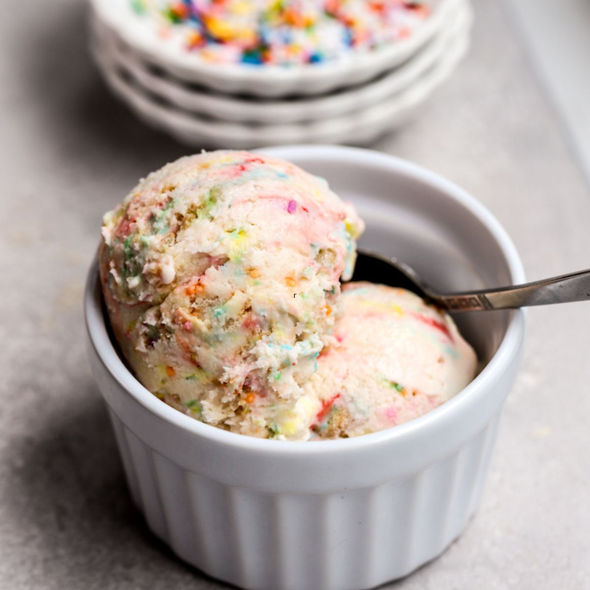

Odin Recipes
Navigate Odin-recipes to discover decadent meals which suit your sweet or savoury requirements.Currently, there exists only four recipes, since our main developer Azariah has been recruited for a missionary trip at Timor-Leste. A ton more recipes will be added when post trip.The Sweet Recipes are a sleek flan and birthday cake ice-cream dowsed in abundance of sprinkles. In contrast, the salty flavours lay in a club-sandwich-pasta and German potato salad. The first dish motivated by MasterChef Australia, where the latter originates from the Bavarian region of southern Germany. |
 |
|---|